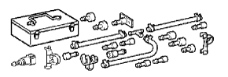
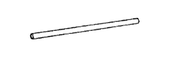

FUEL INJECTOR > INSPECTION > Preparation

|  | 09268-31012 | Injection Measuring Tool Set |
 | (09268-41300) | Clamp |
 | (09268-41500) | Fuel Tube Connector |
| (09268-41600) | Adapter | |
 | (90467-13001) | Clip |
|  | (95336-08070) | Hose |
 | 09842-30090 | EFI Inspection Wire I |
| Graduated cylinder | - |
| Torque wrench | - |
 | 09082-00040 | TOYOTA Electrical Tester | - |
 | (09083-00150) | Test Lead Set | - |